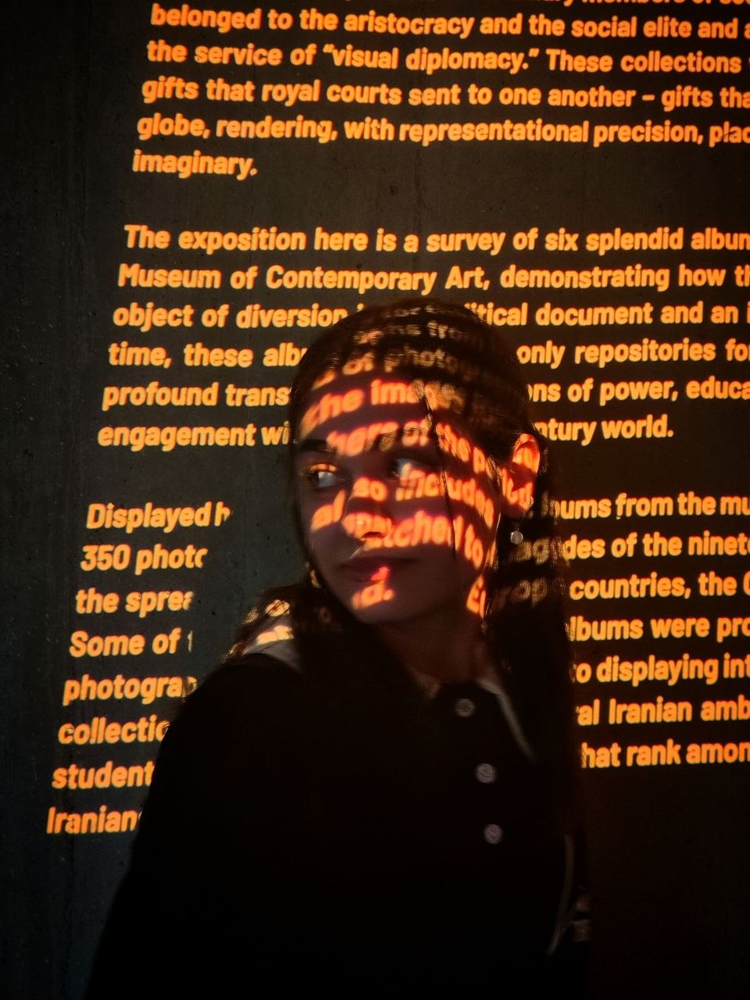
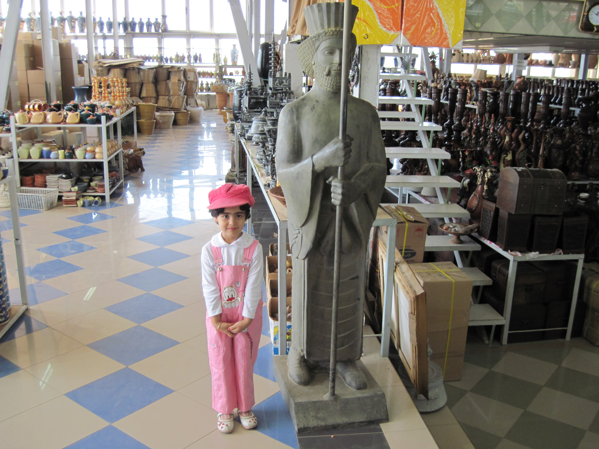
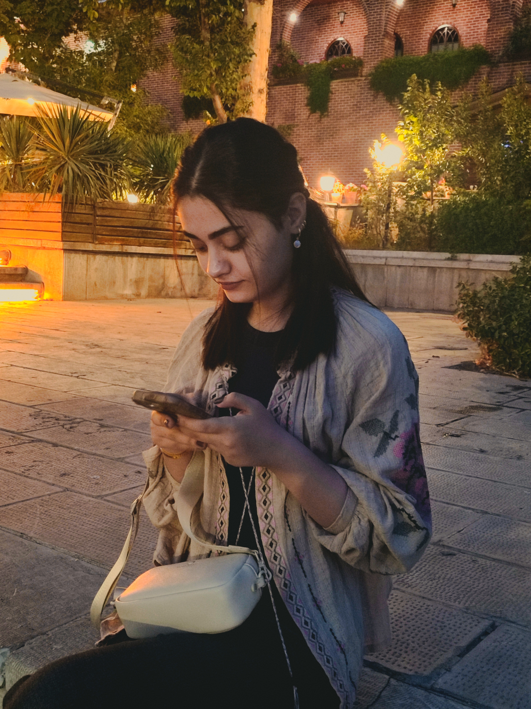
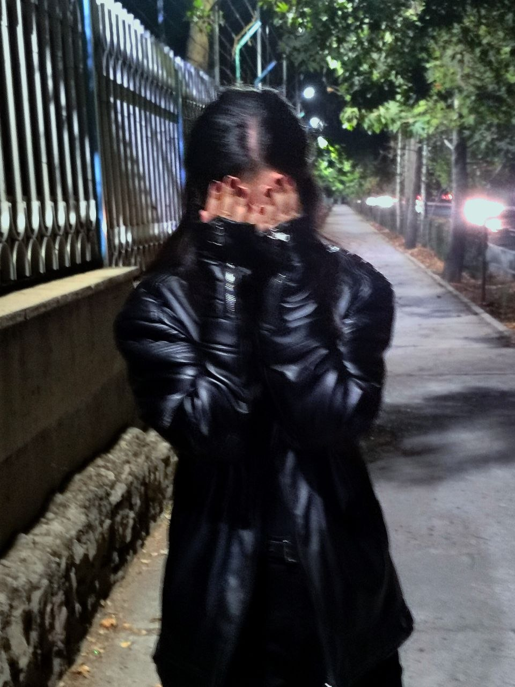
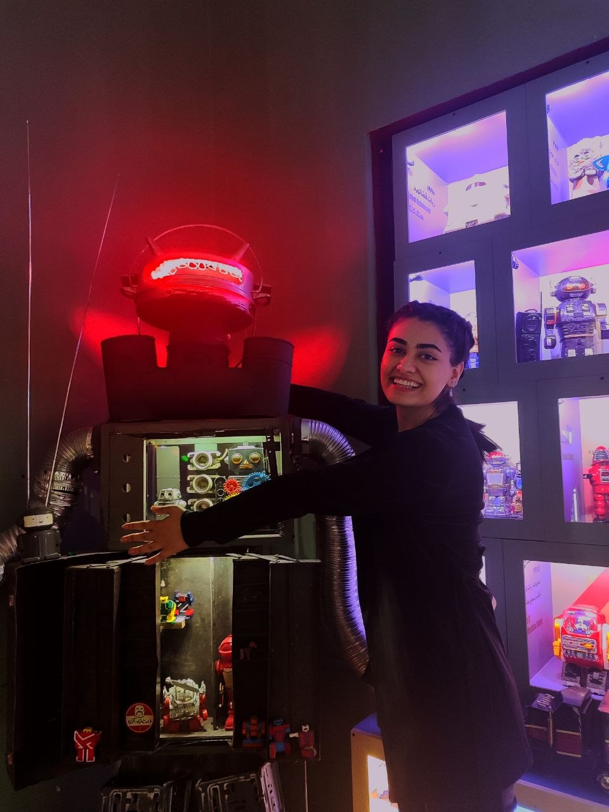
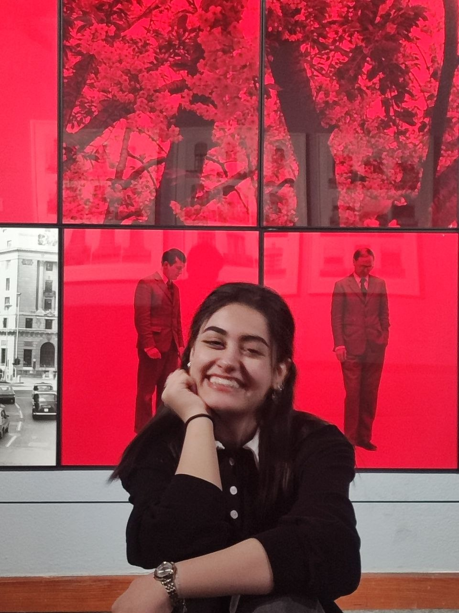
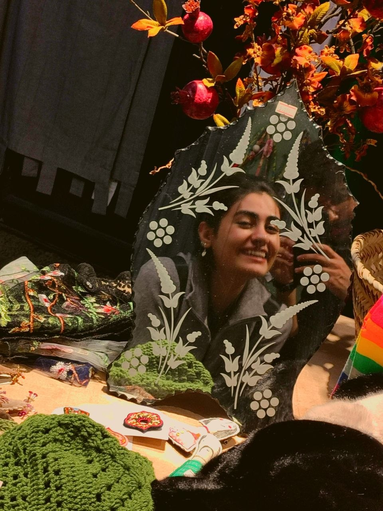
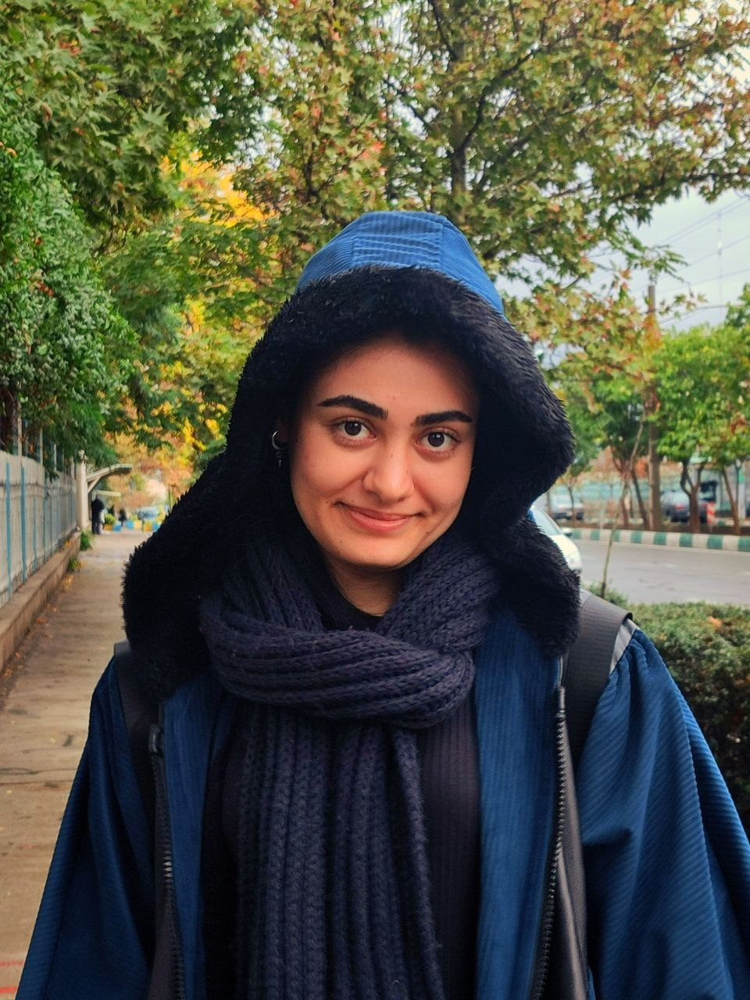

This is Zahra. She is five years old and is an incredibly smart, kind, and cheerful little girl. Spending time with her is always such a joy. She sometimes thinks she is “talking my ear off” when she talks a lot, but that couldn’t be further from the truth. I genuinely love listening to everything she has to say. She loves trying new things and has an amazing enthusiasm for everything. She also adores small, adorable animals, especially kittens. She is the best thing that has ever happened to me. Seeing her is the most important part of my life. Whenever she is not around, I miss her so much, and she is always on my mind. She is my only motivation and the one thing that brings me happiness and comfort these days.


She has the most beautiful smile




And she was the best person I could have met.
